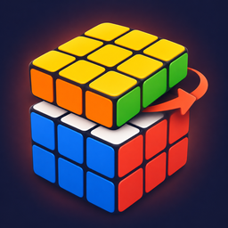

Help & support
CubeWhiz for iPhone and iPad
Scanning tips
- Use even, bright light. Avoid strong lamps that make white look yellow, and shiny reflections.
- Fill the square with one side of the cube, and hold still for a moment — it captures by itself.
- Keep the same colour on top while you turn the cube left for the first four sides.
- Dotted stickers on the check screen were hard to read: tap a colour, then tap the sticker to fix it.
"One corner looks twisted" or "One edge looks flipped"
Either a sticker was misread, or a piece has been twisted or popped out and put back the wrong way. Check the highlighted pieces against your cube. If the colours all match, the piece itself needs turning back by hand — see the lesson "Rebuild or fix a cube".
I lost my place during a solve
Tap the back arrow to step back, or choose "Back to start of stage" from the ⋯ menu. If your cube no longer matches, close the solve and scan it again — CubeWhiz will work out a fresh solution.
Premium
Premium is a one-off purchase. To get it back on a new device, open Settings in the app and tap "Restore purchases". With Family Sharing turned on, family members get it too.
Contact
Email cubewhiz.help@outlook.com — we usually reply within two working days.